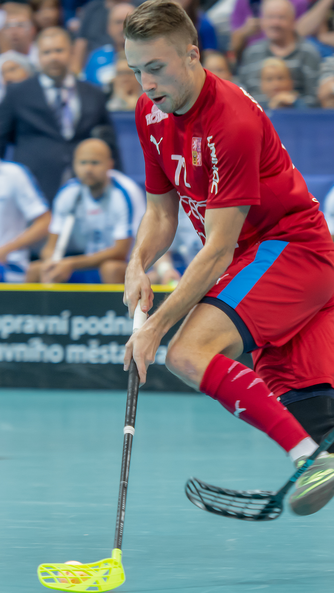
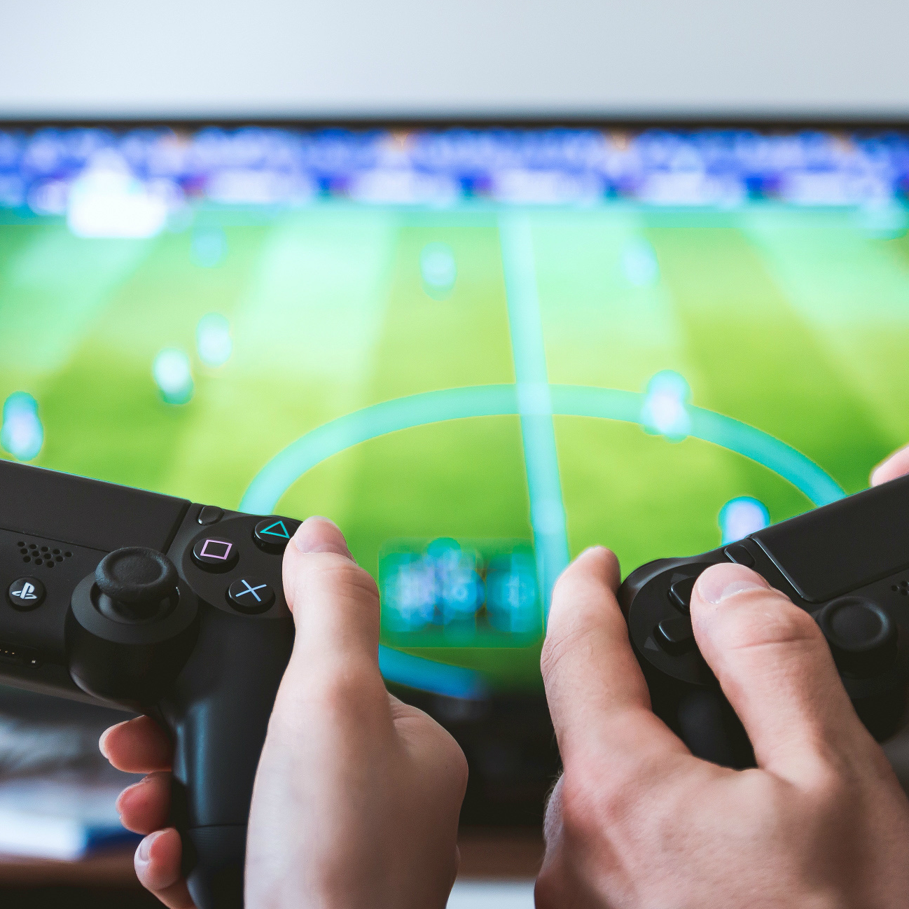

Hier staan mijn Hobbies

Dit is Floorball een soort zaalhockey. Dit is een hobby wat ik een tijd deed maar, ik ben van plan om er mee te stoppen want het is minder leuk dan een paar jaar geleden.

Als ik nog vrije tijd over heb ga ik meestal gamen met vrienden en dan speel ik meestal Rocket League